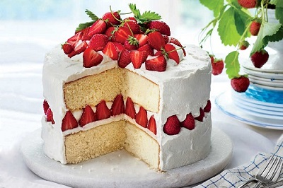

Cake Facts

Cake is a form of sweet dessert that is typically baked. In its oldest forms, cakes were modifications of breads, but cakes now cover a wide range of preparations that can be simple or elaborate, and that share features with other desserts such as pastries, meringues, custards, and pies.
More Information
Cake is often served as a celebratory dish on ceremonial occasions, such as weddings, anniversaries, and birthdays. There are countless cake recipes; some are bread-like, some are rich and elaborate, and many are centuries old. Cake making is no longer a complicated procedure; while at one time considerable labor went into cake making (particularly the whisking of egg foams), baking equipment and directions have been simplified so that even the most amateur cook may bake a cake.